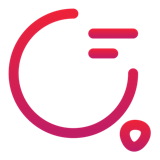
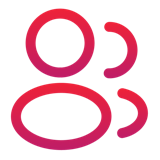

Piloter le développement dans la chaîne de production
 Du poste à la chaîneCh. 1
Du poste à la chaîneCh. 1
MIT (Demirer et al.) : l'IA est un amplificateur, la vélocité n'est pas la valeur. Sans cadre, on produit de l'AI Slop. La valeur est dans les décisions qui précèdent le code et dans les gates.
 Rôles et taille d'équipeCh. 1
Rôles et taille d'équipeCh. 1
Du PO au duo PM + UX ; la squad râteau : une expertise forte, des compétences secondaires décuplées par les agents.
| Domaine | Équipe (Core Domain Chart) |
|---|---|
| Core | 4 séniors, revue humaine stricte |
| Supporting | 2 séniors + 1 junior, automatisation encadrée |
| Generic (CRUD) | 1 sénior + 1 junior, agents très poussés |
C'est la charge cognitive métier qui fixe la taille, pas le volume de code.

Le SDLC augmenté en 5 momentsCh. 1Découvrir › Concevoir › Construire › Valider / Déployer › Apprendre, en boucle continue.
Comprendre → expliciter → concevoir → exécuter → vérifier → apprendre.
 Context Nexus & IDPCh. 2
Context Nexus & IDPCh. 2
Entropie : la connaissance se perd à chaque transmission. Les agents n'ont pas d'intuition métier : toute règle implicite devient un bug généré.
L'IDP (Backstage, Port) devient le Context Nexus, exposé aux agents via MCP / OpenTelemetry.
 Trois niveaux d'autoritéCh. 2
Trois niveaux d'autoritéCh. 2
| Niveau | Rédigé par | Pour l'IA |
|---|---|---|
| 1. Invariants d'entreprise SecOps, RGPD, archi DSI | la Gouvernance | lecture seule |
| 2. Invariants métier DDD, règles, ADR | les sachants | arbitrage humain |
| 3. Doc dérivée OpenAPI, schemas, changelogs | les agents IA | générée en CI/CD |

Bi-directional SyncCh. 2 5 règles pour piloter la chaîne
5 règles pour piloter la chaîne
- Spécifier avant de générer : l'IA amplifie aussi les mauvaises décisions.
- Expliciter le métier dans le Context Nexus : l'agent n'a pas d'intuition.
- Donner à l'agent CI un diff riche en contexte :
-U10, pas-U3. - Graduer le merge : sur le Core Domain, validation humaine obligatoire.
- Passer par l'AI Gateway : voir l'équipe, pas sa session.